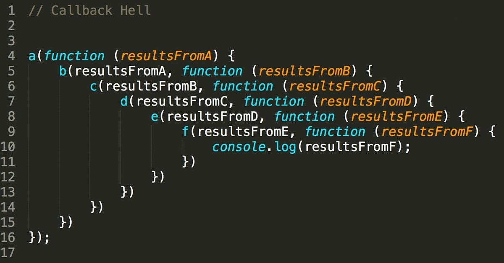
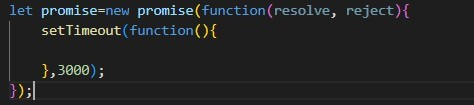
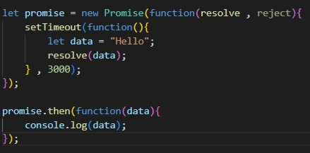
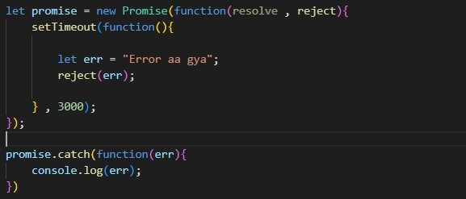
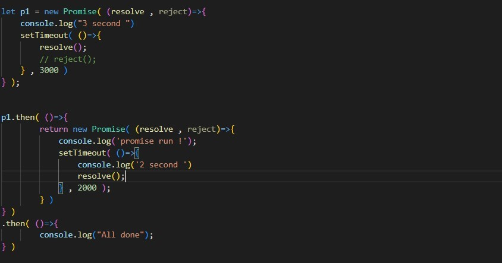
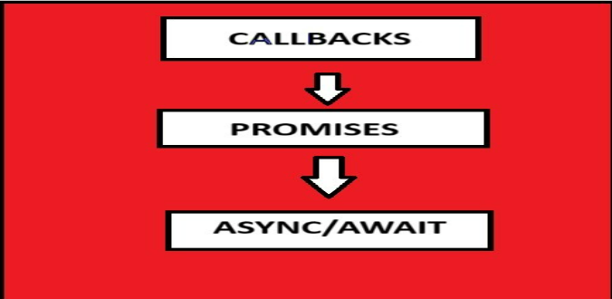

Promises are used to tackle the problem of Callback hell which is created because of using multiple callback functions.
For using a promise, You use a new Promise() constructor. It returns a promise. new Promise() accepts a function. This function have an two arguments resolve and reject. This function calls immediately that’s why we use a setTimeout(). It accepts two arguments a function and time in milliseconds. Note:- resolve and reject are also functions.
Whenever we get data, we can use this resolve function. We can pass data as an argument within the resolve function. This data is handle by .then() method inside the promise object. All the work that is done by resolve is defined inside .then(). We write a function inside .then() in which we can catch our data and console it.
It is used in the situations where our operation is failed. We can pass our error as an argument inside it. It is used to handle the error in promises. Error can be caught in .catch() method.
If we want to do multiple work after sometime, then it grows vertically that’s we called ‘promise chaining’. So, It arises the issue of promise chaining.
For overcome this disadvantage, We use async/await functions, which you can see in our next Blog.
